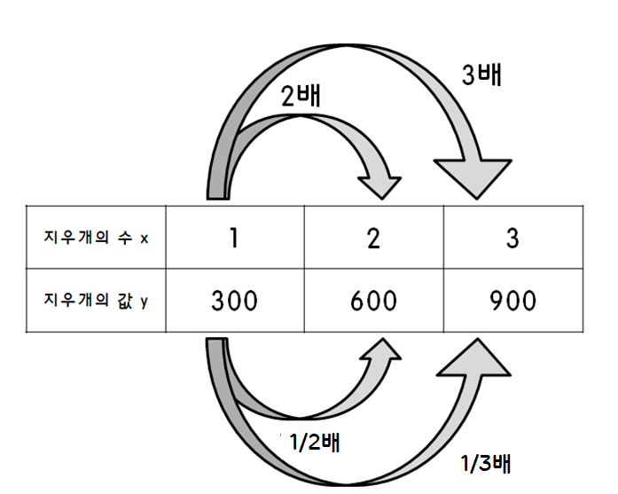
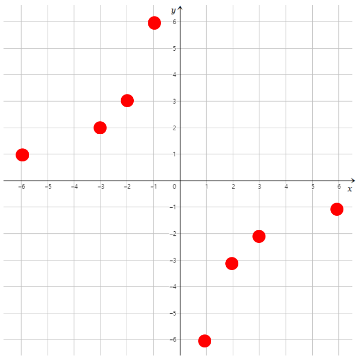
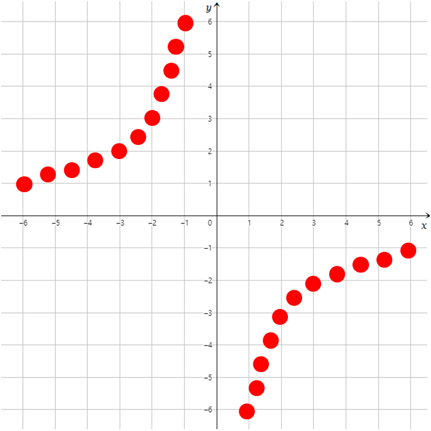
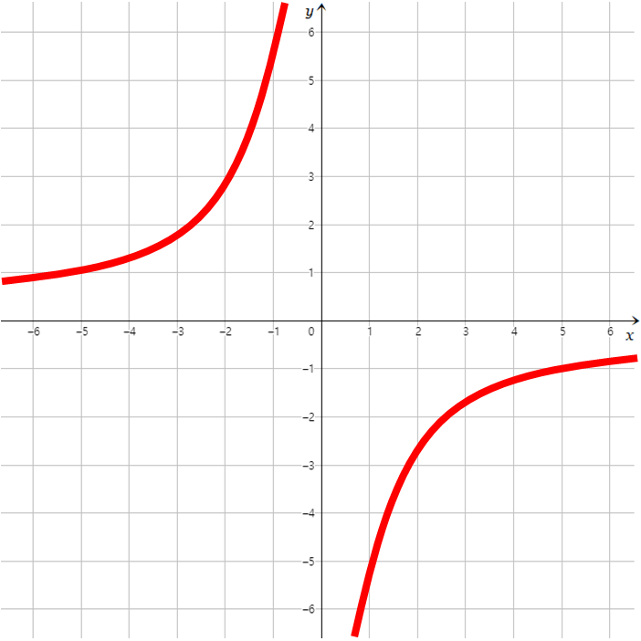

반비례
음료 1L를 학생 한 명이 먹으면 1L를 마실 수 있지만, 학생 2명이서 마시면 0.5L, 3명이서 먹으면 1/3L를 마실 수 있다.
여기서 학생의 수를 x로 두고, 학생 한 명이 마시는 음료의 양을 y로 두면 x가 2배, 3배, 4배 늘어날 때마다 y는 1/2배, 1/3배, 1/4배 늘어난다.
이렇게 x가 2배, 3배, 4배 늘어날 때마다 y는 1/2배, 1/3배, 1/4배 늘어나는 이 관계를 반비례 관계 라고 한다.

관계식
위와 같은 학생의 수 x와 학생 한 명이 마시는 음료의 양 y의 관계를 나타낸 식(y=1000/x, 1L는 1000mL이므로 단위를 통일함)을 x와 y의 관계식이라고 한다.
반비례 관계식은 항상 y=a/x의 형태이다.(여기서 a는 0이 아닌 유리수이다)
반비례 관계를 그래프로 그리기
x값의 범위가 정수일 때, 반비례 관계식을 그래프로 그리면 다음과 같이 된다.

x값의 범위가 정수보다 작을 때, 정비례 관계식을 그래프로 그리면 다음과 같이 된다.

x값의 범위가 수 전체일 때, 정비례 관계식을 그래프로 그리면 다음과 같이 된다.

반비례 그래프의 특징
- 한없이 좌표축에 가까워지는 한 쌍의 곡선이다.
- 한 쌍의 곡선은 좌표축에 가까워지지만, 절대 좌표축과 만나지는 않는다.
- 관계식은 y=a/x의 형태이다(a는 0이 아닌 유리수이다)
- 반비례 관계식에서, a가 양수이면 그래프는 제 1사분면, 제 3사분면을 지나고, a가 음수이면 그래프는 제 2사분면, 제 4사분면을 지난다.
- 반비례 관계식에서, a의 값이 클수록 원점에서 멀어진다.
+Plus
a가 0이 될 수 없는 이유
a가 0이 될 경우, y=ax이므로 y=0/x, y=0이 되므로 x가 2배, 3배, 4배가 되어도 y는 항상 0으로 일정해지기 때문이다.
반비례 그래프가 좌표축을 만나지 못하는 이유(x좌표, y좌표가 0이 될 수 없는 이유)
x좌표는 분모이므로 0이 될 수 없고, y좌표가 0이 되려면 a가 0이어야 하지만, a는 0이 될 수 없기 때문이다.